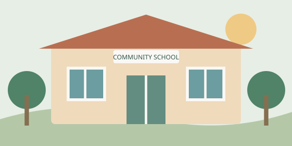
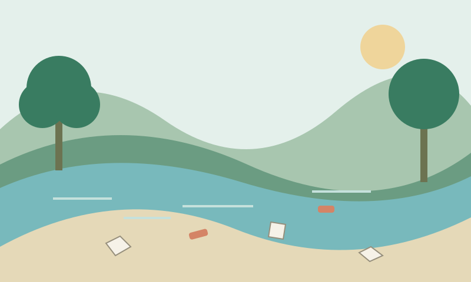
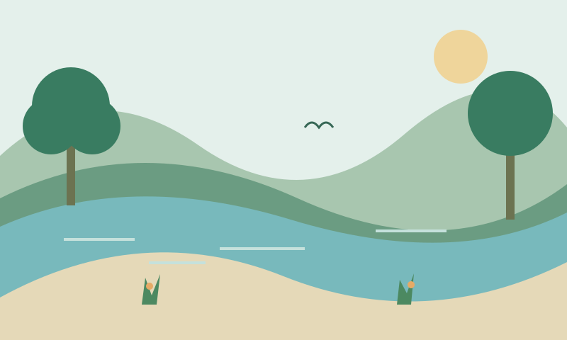

“Where do I even start?”
Citizens want to help but don’t know where to find local needs or the people working on them.
COMMUNITY-LED SOCIAL IMPACT PLATFORM
KarmaConnect connects everyday neighbourhood problems with local NGOs, student volunteers and CSR funding, and shows proof of every rupee and every hour.
DESIGNED FOR

A space to learn. A world of possibilities.
THE CHALLENGE
The will to help is everywhere. The connections aren’t.
Citizens want to help but don’t know where to find local needs or the people working on them.
Small NGOs struggle to find the volunteers and funds that help local projects move forward.
CSR funding often goes to larger projects, leaving everyday neighbourhood needs overlooked.
A need. A neighbour. A new possibility. KarmaConnect closes the gap.
A SIMPLE PATH TO CHANGE
Four steps. One community moving forward.
Find meaningful problems in your neighbourhood.
Connect with the right people, skills, NGOs, and funding.
Bring time, skills, money, or materials.
Follow progress and see evidence of completed work.
CHANGE YOU CAN SEE
Every local story deserves a visible outcome. Before-and-after evidence makes progress clear to everyone who helped.
Illustrative workflow, not a completed real project.


BUILT TO BRING PEOPLE TOGETHER
Platform capabilities designed to turn local effort into accountable action.
Find nearby needs through approximate locations, without exposing home addresses.
Match volunteers by skills, interests, location and availability; companies by focus, budget and NGO track record.
Make specific needs visible. “Need a web developer for 10 hours.”
Every contribution matters.
See where project funds are planned to go.
Before-and-after evidence and Impact Story pages, designed for structured, audit-ready reporting.
Coordinate volunteers, manage project stages and share evidence in one place.
Planned NGO verification, evidence checks and reporting tools help address fake projects.
NO GUESSWORK. JUST PROGRESS.
Every project shows its stage, so everyone sees the same truth.
DIFFERENT STRENGTHS. SHARED PURPOSE.
Bring what you can. Together, we can do more.
BUILT. NOW LET’S TAKE IT LOCAL.
Three working prototype dashboards: Community/User, NGO and CSR Manager/Company. The next step is a real local pilot, followed by nearby towns.
Future targets — not current achievements.
Pilot participation details will be announced when available.
Payments are simulated in the prototype. Real payment integration is planned.
A LITTLE MORE CLARITY
Here’s where we are, and where we’re headed.
Volunteers and NGOs can start for free. Companies and institutions are intended to be paying customers later. Project donations are intended to go entirely to their designated projects, subject to the eventual payment and operating model.
The planned safeguards include NGO verification, evidence checks, reporting tools, and transparent fund tracking.
Students, professionals, NGOs, companies, and people interested in solving local problems.
KarmaConnect has a working prototype. The pilot is planned to start in Warangal and Hanamkonda. Payments are simulated in the prototype; real payment integration is planned.
The platform is designed to show approximate locations rather than home addresses and to let users control what they share.
LET’S START IN OUR OWN NEIGHBOURHOOD
Explore the initiative and look out for future pilot announcements.
Meaningful change starts close to home.
THE NEXT CHAPTER
Planned pilot: Warangal and Hanamkonda, Telangana.
Our working prototype brings Community/User, NGO and CSR Manager/Company dashboards together. The planned pilot will test how these connections work on the ground.
First six-month goals: 5–10 NGOs, 100+ volunteers, 15–20 completed projects and 2–3 CSR partners. These are future targets, not achievements.
Pilot participation details will be announced when available. Registration is not open on this page. Payments are simulated in the prototype; real payment integration is planned.